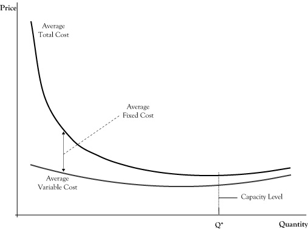

In Chapter 2 "Key Measures and Relationships", we cited average cost as a key performance measure in producing a good or service. Average cost reflects the cost on a per unit basis. A portion of the average cost is the amount of variable costs that can be assigned to the production unit. The other portion is the allocation of fixed costs (specifically those fixed costs that are not sunk), apportioned to each production unit.
The average cost generally varies as a function of the production volume per period. Since fixed costs do not increase with quantity produced, at least in the short run where production capabilities are relatively set, the portion of the average cost attributable to fixed cost is very high for small production volume but declines rapidly and then levels off as the volume increases.
The portion of average cost related to the variable cost usually changes less dramatically in response to production volume than the average fixed cost. In fact, in the example of the ice cream bar business in Chapter 2 "Key Measures and Relationships", we assumed the average variable cost of an ice cream bar would remain $0.30 per unit whether the operation sold a small volume or large volume of ice cream bars. However, in actual production environments, average variable cost may fluctuate with volume.
At very low production volumes, resources may not be used efficiently, so the variable cost per unit is higher. For example, suppose the ice cream bar venture operators purchase those bars wholesale from a vendor who delivers them in a truck with a freezer. Since the vendor’s charge for ice cream bars must cover the cost of the truck driver and truck operation, a large delivery that fills the truck is likely to cost less per ice cream bar than a very small delivery.
At the same time, pushing production levels to the upper limits of an operation’s capability can result in other inefficiencies and cause the average variable cost to increase. For example, in order to increase production volume in a factory, it may be necessary to pay workers to work overtime at a rate 1.5 times their normal pay rate. Another example is that machines may be overworked to drive higher volume but result in either less efficiency or higher maintenance cost, which translates into an increase in average variable cost.
Figure 4.1 "Breakdown of Average Cost Function Into Variable Cost and Fixed Cost Component" shows a general breakdown of average cost into average fixed cost and average variable cost. The figure reflects the earlier situations of variable cost inefficiencies at very low and very high production volumes. Note that even with the continued decline in the average fixed cost, there is a production level (marked Q*) where the average total cost is at its lowest value. Economists called the production volume where average cost is at the lowest value the capacityThe production volume where average cost is at the lowest value; the volume level where a business has the most efficient operation in terms of average cost. of the operation.
In conversational language, we often think of capacity of a container as the maximum volume the container can hold. In that sense of the word, it seems awkward to call the production level Q* the capacity when the graph indicates that it is possible to produce at higher volume levels but just that the average cost per unit will be higher. However, even in physics, the volume in a container can be changed by the use of pressure or temperature, so volume is not limited by the capacity under normal pressures and temperatures.
Figure 4.1 Breakdown of Average Cost Function Into Variable Cost and Fixed Cost Component
The production level corresponding to the lowest point on the graph for average cost indicates the short-run capacity of the business operation.
In the economic sense of the word, we might think of capacity as the volume level where we have the most efficient operation in terms of average cost. Many businesses can operate over capacity, up to some effective physical limit, but in so doing will pay for that supplemental production volume in higher costs, due to needing to employ either more expensive resources or less productive resources, creating congestion that slows production, or overusing resources that results in higher maintenance costs per unit.
If the price earned by the business at these overcapacity volumes is sufficiently high, the firm may realize more profit by operating over capacity than at the capacity point where total average cost is at its lowest. Similarly, if demand is weak and customers will pay a price well in excess of average cost only at volumes lower than capacity, the firm will probably do better by operating below capacity. However, if a firm that is operating well above capacity or well below capacity does not see this as a temporary situation, the discrepancy suggests that the firm is sized either too small or too large. The firm may be able to improve profits in future production periods by resizing its operations, which will readjust the capacity point. If the firm operates in a very competitive market, there may even be little potential for profit for firms that are not operating near their capacity level.